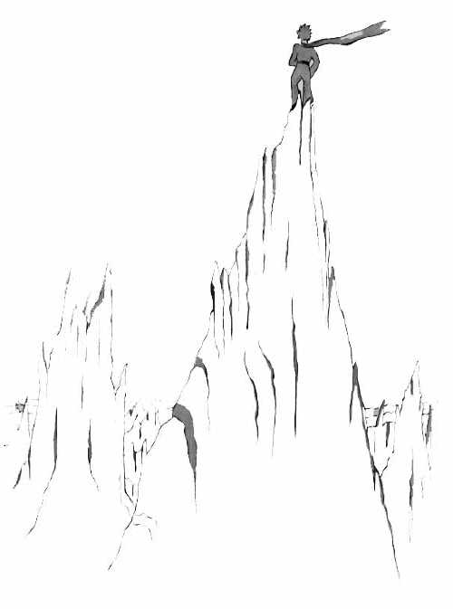
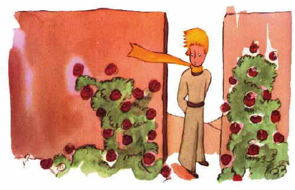
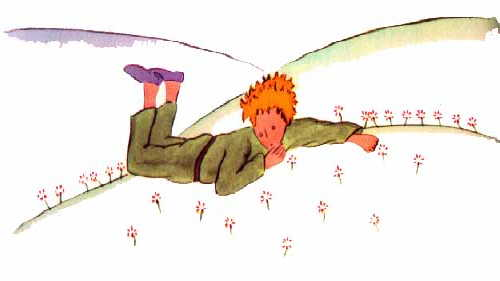
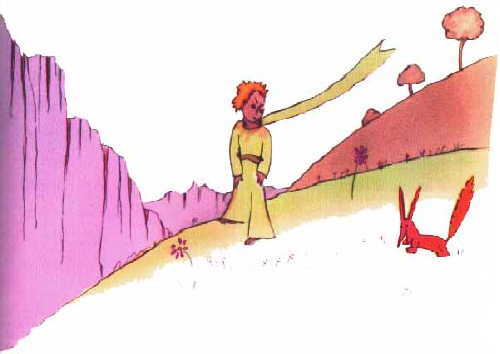
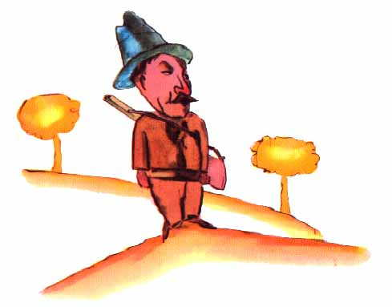
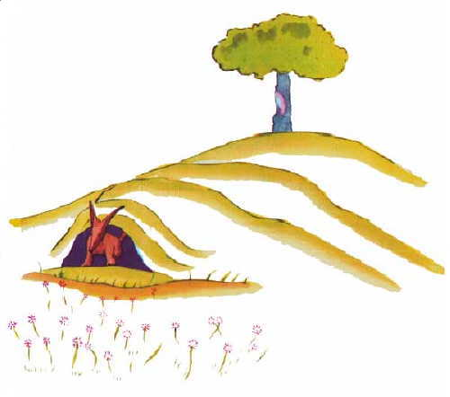

小王子穿过沙漠。他只见过一朵花，一个有着三枚
花瓣的花朵，一朵很不起眼的小花…
“你好。”小王子说。
“你好。”花说。
“人在什么地方？”小王子有礼貌地问道。
有一天，花曾看见一支骆驼商队走过：
“人吗？我想大约有六七个人，几年前，我瞅见过
他们。可是，从来不知道到什么地方去找他们。风吹
着他们到处跑。他们没有根，这对他们来说是很不方便
的。”
“再见了。”小王子说。
“再见。”花说。
XIX
小王子爬上一座高山。过去他所见过的山就是那三
座只有他膝盖那么高的火山，并且他把那座熄灭了的火
山就当作凳子。小王子自言自语地说道：“从这么高的
山上，我一眼可以看到整个星球，以及所有的人。”可
是，他所看到的只是一些非常锋利的悬崖峭壁。

“你好。”小王子试探地问道。
“你好…你好…你好…”回音在回答道。
“你们是什么人？”小王子问。
“你们是什么人…你们是什么人…你们是什么人…”
回音又回答道。
“请你们做我的朋友吧，我很孤独。”他说。
“我很孤独…我很孤独…我很孤独…”回音又回答
着。
小王子想道：“这颗行星真奇怪！它上面全是干巴
巴的，而且又尖利又咸涩，人们一点想象力都没有。他
们只是重复别人对他们说的话…在我的家乡，我有一朵
花。她总是自己先说话…”
XX
在沙漠、岩石、雪地上行走了很长的时间以后，小
王子终于发现了一条大路。所有的大路都是通往人住的
地方的。
“你们好。”小王子说。
这是一个玫瑰盛开的花园。

“你好。”玫瑰花说道。
小王子瞅着这些花，它们全都和他的那朵花一样。
“你们是什么花？”小王子惊奇地问。
“我们是玫瑰花。”花儿们说道。
“啊！”小王子说…。
他感到自己非常不幸。他的那朵花曾对他说她是整
个宇宙中独一无二的一种花。可是，仅在这一座花园里
就有五千朵完全一样的这种花朵！

小王子自言自语地说：“如果她看到这些，她是
一定会很恼火…她会咳嗽得更厉害，并且为避免让人耻
笑，她会佯装死去。那么，我还得装着去护理她，因为
如果不这样的话，她为了使我难堪，她可能会真的死去
…”
接着他又说道：“我还以为我有一朵独一无二的花
呢，我有的仅是一朵普通的花。这朵花，再加上三座只
有我膝盖那么高的火山，而且其中一座还可能是永远熄
灭了的，这一切不会使我成为一个了不起的王子…”于
是，他躺在草丛中哭泣起来。
XXI
就在这当儿，跑来了一只狐狸。
“你好。”狐狸说。

“你好。”小王子很有礼貌地回答道。他转过身
来，但什么也没有看到。
“我在这儿，在苹果树下。”那声音说。
“你是谁？”小王子说，“你很漂亮。”
“我是一只狐狸。”狐狸说。
“来和我一起玩吧，”小王子建议道，“我很苦恼
…”
“我不能和你一起玩，”狐狸说，“我还没有被驯
服呢。”
“啊！真对不起。”小王子说。
思索了一会儿，他又说道：
“什么叫‘驯服’呀？”
“你不是此地人。”狐狸说，“你来寻找什么？”
“我来找人。”小王子说，“什么叫‘驯服’呢？
”
“人，”狐狸说，“他们有枪，他们还打猎，这真
碍事！他们唯一的可取之处就是他们也养鸡，你是来寻
找鸡的吗？”
“不，”小王子说，“我是来找朋友的。什么叫‘
驯服’呢？”
“这是已经早就被人遗忘了的事情，”狐狸说，“
它的意思就是‘建立联系’。”
“建立联系？”
“一点不错，”狐狸说。“对我来说，你还只是一
个小男孩，就像其他千万个小男孩一样。我不需要你。
你也同样用不着我。对你来说，我也不过是一只狐狸，
和其他千万只狐狸一样。但是，如果你驯服了我，我
们就互相不可缺少了。对我来说，你就是世界上唯一的
了；我对你来说，也是世界上唯一的了。”
“我有点明白了。”小王子说，“有一朵花…，我
想，她把我驯服了…”
“这是可能的。”狐狸说，“世界上什么样的事都
可能看到…”
“啊，这不是在地球上的事。”小王子说。
狐狸感到十分蹊跷。
“在另一个星球上？”
“是的。”
“在那个星球上，有猎人吗？”
“没有。”
“这很有意思。那么，有鸡吗？”
“没有。”
“没有十全十美的。”狐狸叹息地说道。

可是，狐狸又把话题拉回来：
“我的生活很单调。我捕捉鸡，而人又捕捉我。所
有的鸡全都一样，所有的人也全都一样。因此，我感到
有些厌烦了。但是，如果你要是驯服了我，我的生活就
一定会是欢快的。我会辨认出一种与众不同的脚步声。
其他的脚步声会使我躲到地下去，而你的脚步声就会
象音乐一样让我从洞里走出来。再说，你看！你看到那
边的麦田没有？我不吃面包，麦子对我来说，一点用也
没有。我对麦田无动于衷。而这，真使人扫兴。但是，
你有着金黄色的头发。那么，一旦你驯服了我，这就会
十分美妙。麦子，是金黄色的，它就会使我想起你。而
且，我甚至会喜欢那风吹麦浪的声音…”
狐狸沉默不语，久久地看着小王子。
“请你驯服我吧！”他说。
“我是很愿意的。”小王子回答道，“可我的时间
不多了。我还要去寻找朋友，还有许多事物要了解。”
“只有被驯服了的事物，才会被了解。”狐狸说，
“人不会再有时间去了解任何东西的。他们总是到商人
那里去购买现成的东西。因为世界上还没有购买朋友的
商店，所以人也就没有朋友。如果你想要一个朋友，那
就驯服我吧！”
“那么应当做些什么呢？”小王子说。
“应当非常耐心。”狐狸回答道，“开始你就这样
坐在草丛中，坐得离我稍微远些。我用眼角瞅着你，你
什么也不要说。话语是误会的根源。但是，每天，你坐
得靠我更近些…”
第二天，小王子又来了。
“最好还是在原来的那个时间来。”狐狸说道，“
比如说，你下午四点钟来，那么从三点钟起，我就开始
感到幸福。时间越临近，我就越感到幸福。到了四点钟
的时候，我就会坐立不安；我就会发现幸福的代价。但
是，如果你随便什么时候来，我就不知道在什么时候该
准备好我的心情…应当有一定的仪式。”
“仪式是什么？”小王子问道。
“这也是一种早已被人忘却了的事。”狐狸说，“
它就是使某一天与其他日子不同，使某一时刻与其他时
刻不同。比如说，我的那些猎人就有一种仪式。他们每
星期四都和村子里的姑娘们跳舞。于是，星期四就是一
个美好的日子！我可以一直散步到葡萄园去。如果猎人
们什么时候都跳舞，天天又全都一样，那么我也就没有
假日了。”
就这样，小王子驯服了狐狸。当出发的时刻就快要
来到时：
“啊！”狐狸说，“我一定会哭的。”
“这是你的过错，”小王子说，“我本来并不想给
你任何痛苦，可你却要我驯服你…”
“是这样的。”狐狸说。
“你可就要哭了！”小王子说。
“当然罗。”狐狸说。
“那么你什么好处也没得到。”
“由于麦子颜色的缘故，我还是得到了好处。”狐
狸说。
然后，他又接着说。
“再去看看那些玫瑰花吧。你一定会明白，你的那
朵是世界上独一无二的玫瑰。你回来和我告别时，我再
赠送给你一个秘密。”
于是小王子又去看那些玫瑰。
“你们一点也不象我的那朵玫瑰，你们还什么都不
是呢！”小王子对她们说。“没有人驯服过你们，你们
也没有驯服过任何人。你们就象我的狐狸过去那样，它
那时只是和千万只别的狐狸一样的一只狐狸。但是，我
现在已经把它当成了我的朋友，于是它现在就是世界上
独一无二的了。”
这时，那些玫瑰花显得十分难堪。
“你们很美，但你们是空虚的。”小王子仍然在对
她们说，“没有人能为你们去死。当然罗，我的那朵
玫瑰花，一个普通的过路人以为她和你们一样。可是，
她单独一朵就比你们全体更重要，因为她是我浇灌的。
因为她是我放在花罩中的。因为她是我用屏风保护起来
的。因为她身上的毛虫（除了留下两三只为了变蝴蝶而
外）是我除灭的。因为我倾听过她的怨艾和自诩，甚至
有时我聆听着她的沉默。因为她是我的玫瑰。”

他又回到了狐狸身边。
“再见了。”小王子说道。
“再见。”狐狸说。“喏，这就是我的秘密。很简
单：只有用心才能看得清。实质性的东西，用眼睛是看
不见的。”
“实质性的东西，用眼睛是看不见的。”小王子重
复着这句话，以便能把它记在心间。
“正因为你为你的玫瑰花费了时间，这才使你的玫
瑰变得如此重要。”
“正因为你为你的玫瑰花费了时间…”小王子又重
复着，要使自己记住这些。
“人们已经忘记了这个道理，”狐狸说，“可是，
你不应该忘记它。你现在要对你驯服过的一切负责到
底。你要对你的玫瑰负责…”
“我要对我的玫瑰负责…”小王子又重复着……
XXII
“你好。”小王子说道。
“你好。”扳道工说道。
“你在这里做什么？”小王子问。
“我一包包地分选旅客，按每千人一包。”扳道工
说，“我打发这些运载旅客的列车，一会儿发往右方，
一会儿发往左方。”
这时，一列灯火明亮的快车，雷鸣般地响着，把扳
道房震得颤颤悠悠。
“他们真匆忙呀，”小王子说，“他们要寻找什
么？”
“开机车的人自己也不知道。”扳道工说道。
于是，第二列灯火通明的快车又朝着相反的方向轰
隆轰隆地开过去。
“他们怎么又回来了呢？”小王子问道。
“他们不是原来那些人了。”扳道工说，“这是一
次对开列车。”
“他们不满意他们原来所住的地方吗？”
“人们是从来也不会满意自己所在的地方的。”扳
道工说。
此时，第三趟灯火明亮的快车又隆隆而过。
“他们是在追随第一批旅客吗？”小王子问道。
“他们什么也不追随。”扳道工说，“他们在里面
睡觉，或是在打哈欠。只有孩子们把鼻子贴在玻璃窗上
往外看。”
“只有孩子知道他们自己在寻找什么。”小王子
说，“他们为一个布娃娃花费不少时间，这个布娃娃就
成了很重要的东西，如果有人夺走的他们的布娃娃，他
们就哭泣…”
“他们真幸运。”扳道工说。